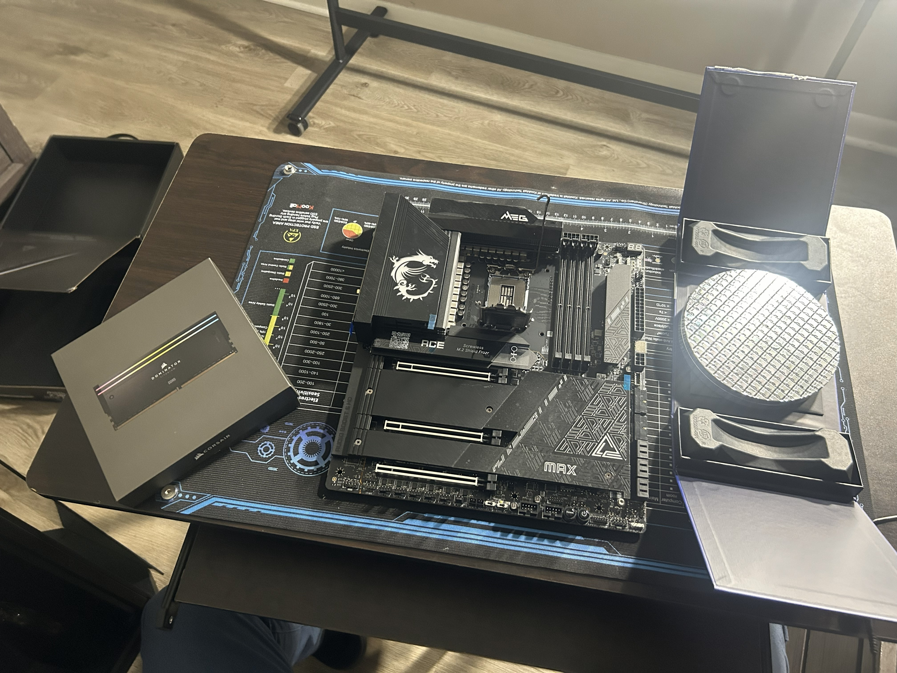
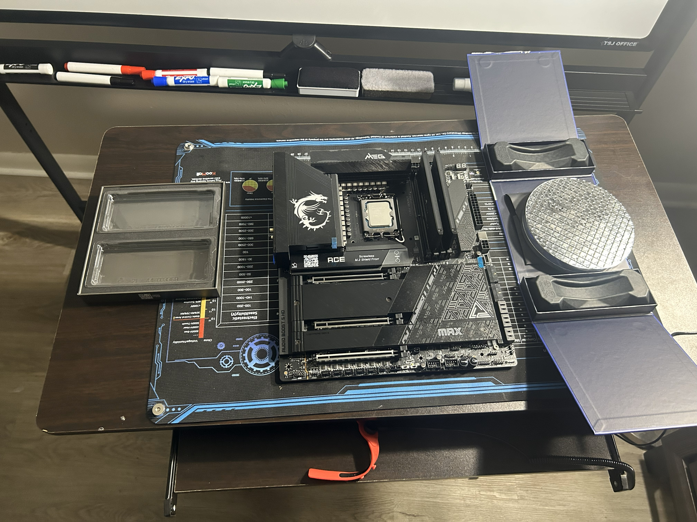
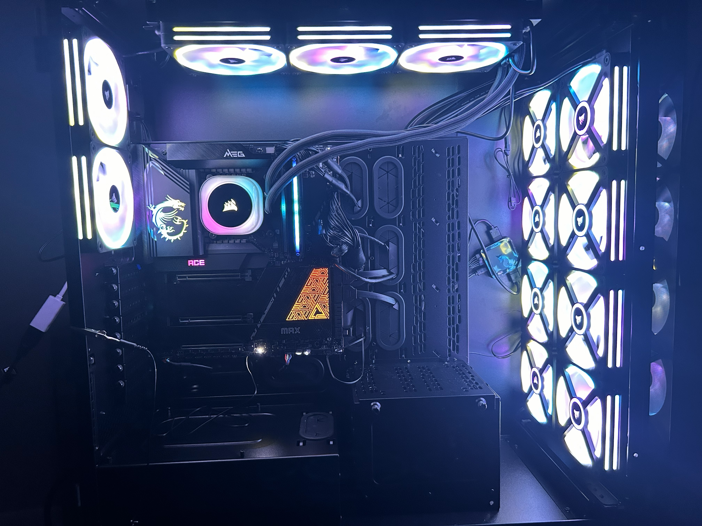
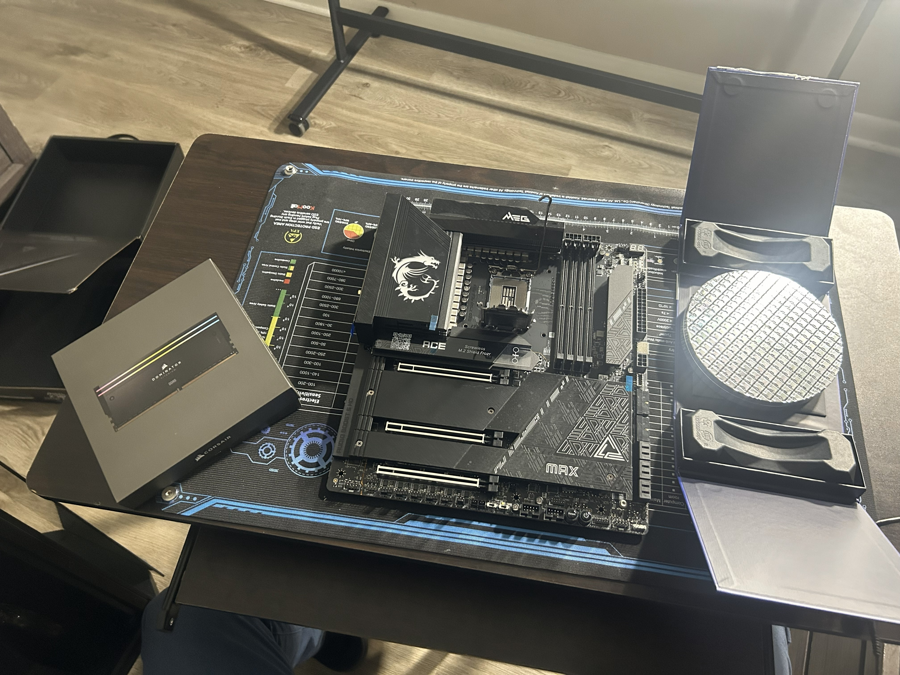
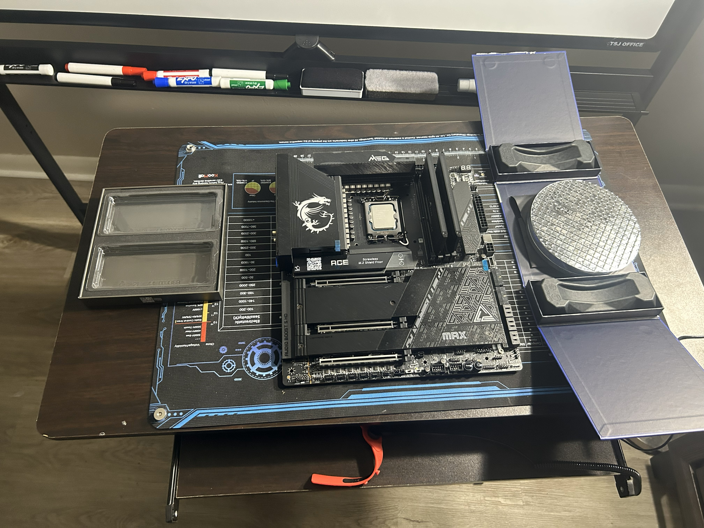
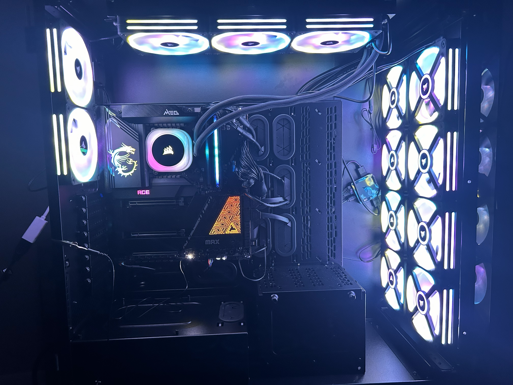

Goal
Build a stable, high-performance workstation optimized for development, virtualization, and cybersecurity labs.
Planned, assembled, and validated a custom workstation like a real IT deployment: hardware compatibility, airflow/cabling, POST/BIOS verification, and readiness for virtualization labs.
Build a stable, high-performance workstation optimized for development, virtualization, and cybersecurity labs.
Visual evidence of the build process (parts, progress, final boot).

 






This is the same kind of verification flow used in workstation provisioning and desktop support.
Keep detailed documentation on GitHub; on your site, show the clean summary + evidence.
Parts list, build steps, and lessons learned.
Open GitHub documentation →How the workstation is used as an IT + cybersecurity lab.
Open Virtualization Lab page →